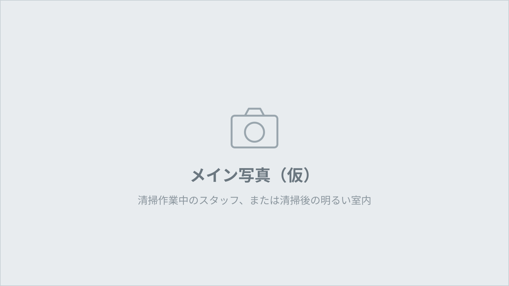
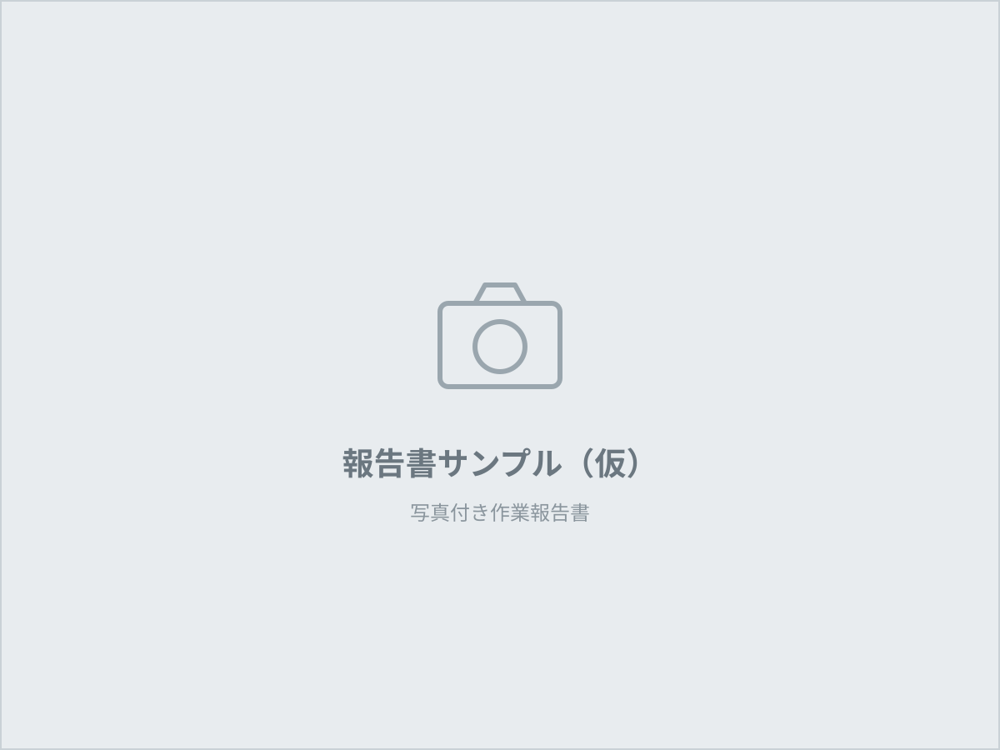
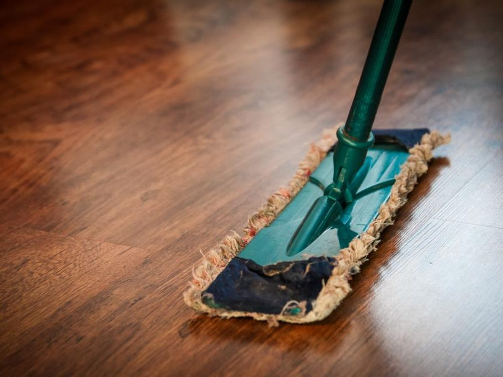

大阪・関西の
空室清掃・定期清掃は
株式会社CORLYへ
アパート・マンションの空室清掃から、オフィス・施設の定期清掃、飲食店のグリストラップ清掃まで。有資格者が作業手順を決め、写真付きの報告書で結果をお伝えします。

SERVICE
清掃サービス
住まい、オフィス、店舗。現場ごとに作業範囲と頻度を決めて、同じ品質で繰り返します。
REASON
CORLYが選ばれる理由
01
有資格者が作業手順を決める
JIS品質管理責任者と掃除能力検定士が在籍。現場ごとに手順と確認項目を決め、誰が作業しても同じ品質になるようにしています。
02
写真付き報告書で結果を残す
作業前後の写真と確認項目を報告書にまとめて提出します。現場に行かなくても状態がわかります。
03
代表が直接対応
お問い合わせから見積、現場確認まで代表が担当します。担当者が変わらず、判断が速い。

REPORT
作業は、写真で報告します
「きれいになったか」を口頭ではなく写真でお伝えします。作業前・作業後の写真と確認項目を1枚の報告書にまとめ、作業のたびに提出します。
- 作業前・作業後の写真
- 作業箇所ごとの確認項目
- 気になった点・次回の提案
WORKS
施工写真
実際の現場写真を順次掲載します。

AREA
対応エリア
- 大阪府本社・大阪市中央区
- 兵庫県
- 京都府
- 奈良県
- 滋賀県
- 和歌山県
上記以外のエリアもご相談ください。
FLOW
ご依頼の流れ
- STEP 1
お問い合わせ
電話またはフォームからご連絡ください。物件の場所と困っていることをお聞かせください。
- STEP 2
現地確認・お見積
現場を確認し、作業範囲と頻度を決めてお見積を提示します。見積は無料です。
- STEP 3
作業
決めた手順に沿って作業します。営業時間外や休日の作業もご相談ください。
- STEP 4
報告
作業前後の写真を付けた報告書を提出します。気になる点は次回に反映します。
COMPANY
会社概要
| 社名 | 株式会社CORLY（コーリー） |
|---|---|
| 代表取締役 | 岩崎 大樹 |
| 所在地 | 〒541-0053 大阪府大阪市中央区本町2-3-4 アソルティ本町4F |
| 事業内容 | 空室清掃・日常清掃・定期清掃・店舗清掃・グリストラップ清掃 |
お見積・ご相談は無料です
1室だけ、1回だけのご依頼でも構いません。現場を確認してからお見積を提示します。